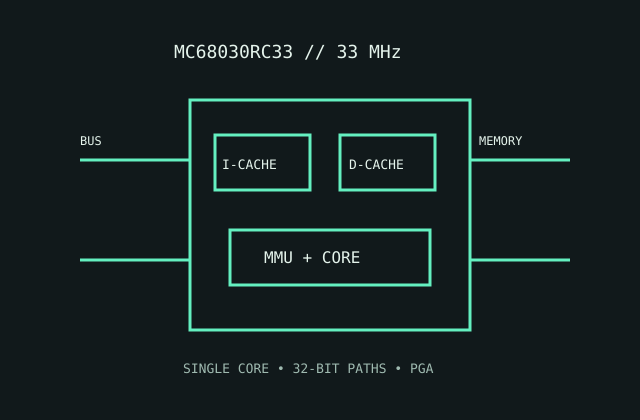

[ MOTOROLA 68000 FAMILY // INTEGRATED MMU ]
Motorola MC68030RC33
The 33 MHz full 68030 integrates address translation and small instruction/data caches, reducing the external logic needed by 32-bit systems.

MODEL IDENTIFICATION: MC68030RC33, 33 MHz full-featured ceramic PGA speed/package variant. Not the reduced EC030 sibling.
Recorded specifications
| Model | MC68030RC33. |
|---|---|
| Generation | Third-generation 68000 family, late-1980s 32-bit processor. |
| Architecture / cores | Motorola 68030 CISC ISA; one CPU core with integrated MMU. |
| Frequency / cache | 33 MHz speed grade; 256-byte instruction cache and 256-byte data cache. |
| Package / socket | RC ceramic PGA package; fit the board's exact MC68030 PGA socket and pin map. |
| Power | 5 V nominal supply. This vintage part has no modern TDP; adhere to the 33 MHz data sheet's maximum current and thermal dissipation limits. |
| Memory / bus | 32-bit external data and address buses; integrated MMU translates virtual addresses; board memory controller and DRAM remain external. |
| Board compatibility | Requires a full 68030-compatible bus, matched PGA footprint, 5 V power and 33 MHz timing. Confirm board cache/MMU wiring, firmware and RAM timing. |
Compatibility notes
- Do not substitute EC030 without accounting for its reduced memory-management features.
- Cache snooping, bus arbitration and reset configuration are board-level compatibility concerns.
- Use package and electrical tables for the exact RC33 marking; family frequency alone does not certify board support.
Sources & further reading
- Motorola MC68030 data sheet (Bitsavers technical archive)Manufacturer data sheet archive for speed grades, package options and electrical characteristics.
- Motorola MC68030 User's Manual, third edition (Bitsavers)Manufacturer system manual archive for caches, integrated MMU, bus and memory design.